Now Playing
Your music, with the words.
Apple Music, Spotify and more. Album art, a scrubber you can drag, and synced lyrics that highlight the word being sung. Click any line to jump to it.
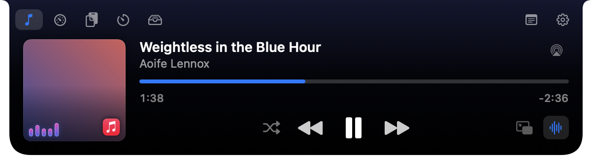
MiniNotch turns the camera housing on your MacBook into a home for your music, lyrics, calendar, weather and files. It stays out of sight until you reach for it.
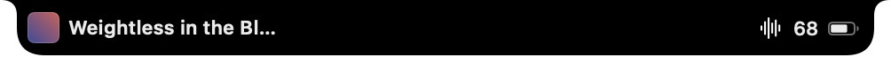
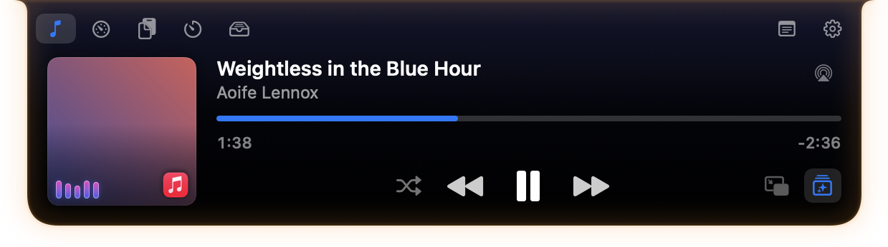
Hover over the notch and it opens. Move away and it's gone. Swipe with two fingers to flip between tabs.
Apple Music, Spotify and more. Album art, a scrubber you can drag, and synced lyrics that highlight the word being sung. Click any line to jump to it.

Lock your Mac and the song stays on screen: the cover, the controls, and big lyrics that scroll and fade as the song goes. Pick the layout you like.
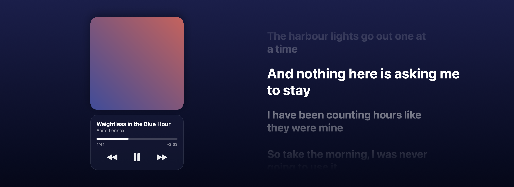
The week or the month, reminders you can tick off, and a Join button right before your call starts.
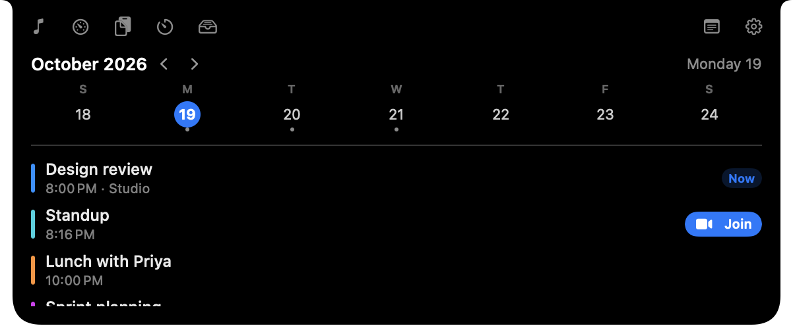
The next hours and days, for where you are or a city you choose. No account needed.
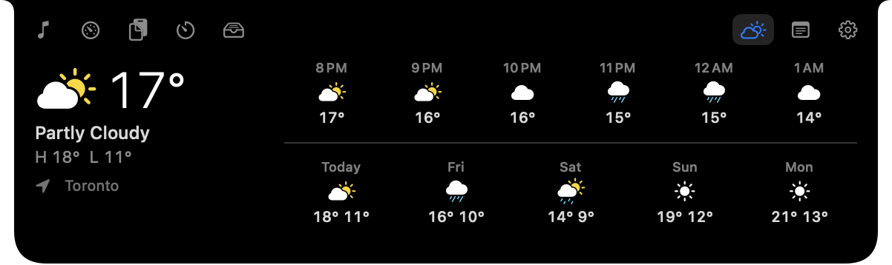
Drop files and links on the notch, drag them out later, or send them with AirDrop.
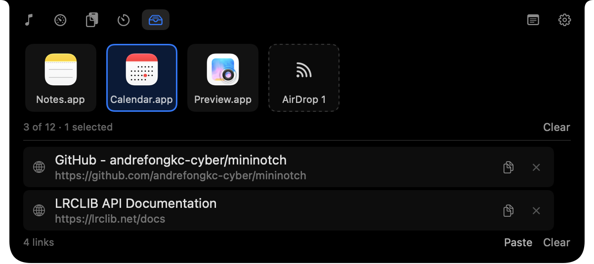
Quick countdowns and Pomodoro. The time left stays visible even with the notch closed.
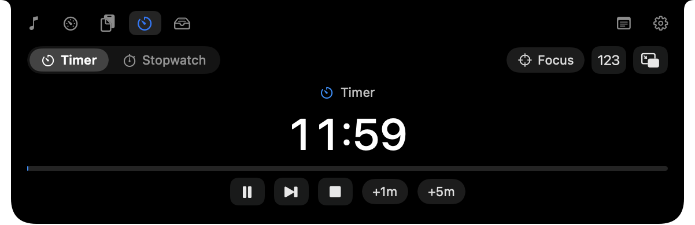
CPU, GPU, memory, network and temperatures, each with five minutes of history.
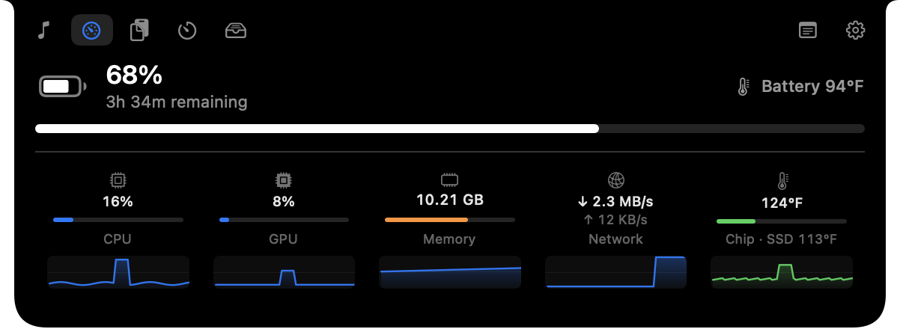
Jot something down without opening an app. Saved on your Mac as you type.
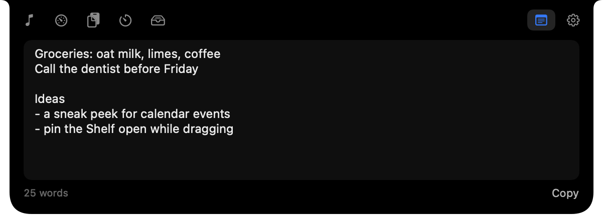
CPU while the notch is closed. It costs nothing until you use it.
Volume, brightness and keyboard backlight, shown at the notch instead of the middle of your screen.
MiniNotch checks for new versions on its own and asks before installing them, so you only download it once.
From plain black to soft clay. Any of them can sit on Liquid Glass on macOS 26.
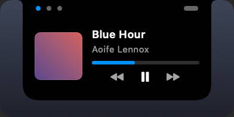
Minimal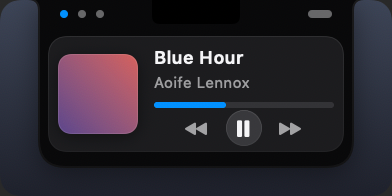
Bento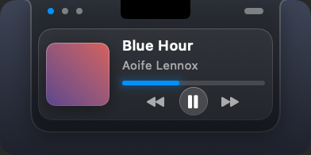
Glass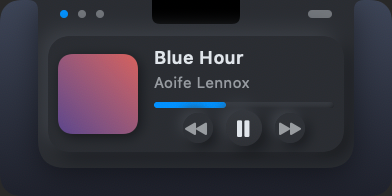
Neumorphic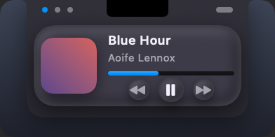
Clay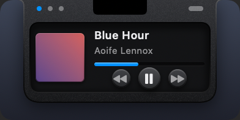
SkeuomorphicNo accounts, no analytics, no tracking.
Each one is requested the first time a feature needs it, with the reason on screen.
Online lyrics send the song's title and artist to lrclib.net. Weather sends a rounded location to open-meteo.com. Both are your choice.
Clipboard history lives in memory only, skips passwords, and can stay blurred until Touch ID.
The first time you open MiniNotch, macOS will stop it. That's expected. Step 3 shows how to let it through. You only do this once.
Open the disk image and drag MiniNotch onto the Applications folder. Then open it from Applications.
macOS says MiniNotch can't be opened. Click Done, then open System Settings → Privacy & Security, scroll down, and click Open Anyway. Enter your password, then Open.
Apple only lets apps open without asking once they have been notarised, which needs a paid developer membership MiniNotch doesn't have yet. The app is the same either way, and its code is public on GitHub for anyone to read.
Recent versions of macOS removed that shortcut. Open Anyway in Privacy & Security is the way now, and the button only appears after you've tried to open the app once.